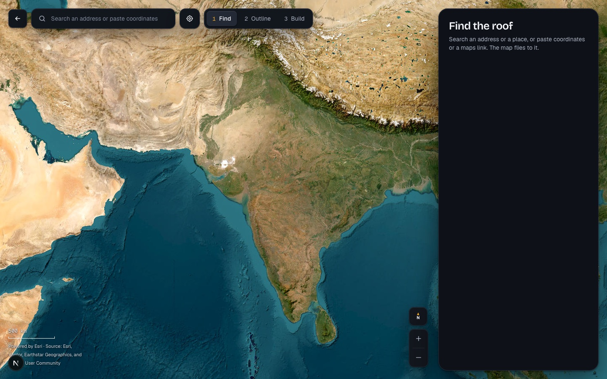
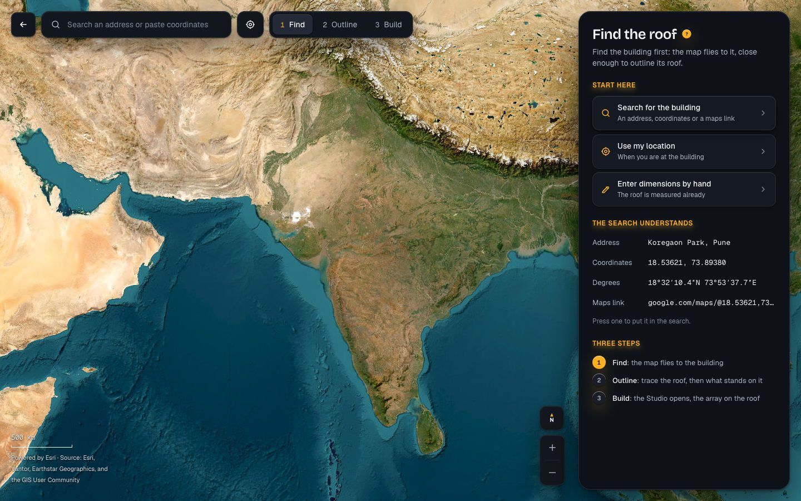
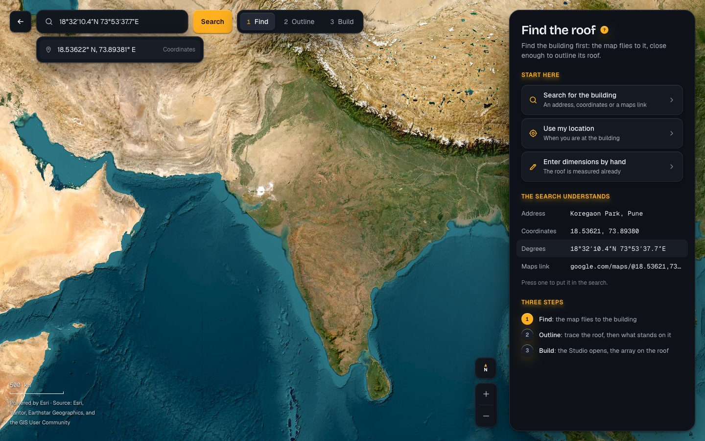
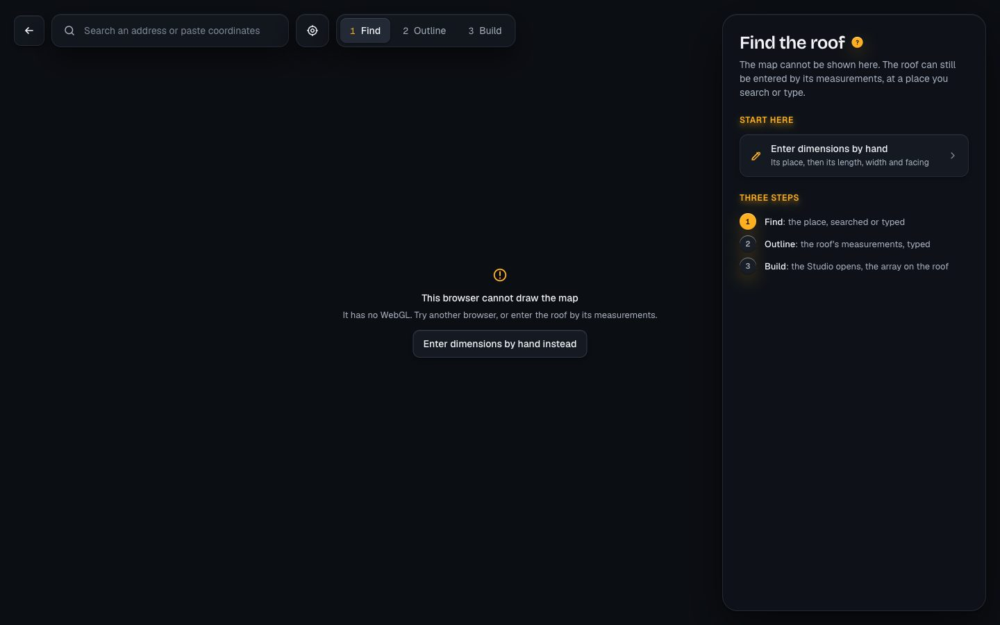

Today, before a place is found, the panel holds “Find the roof” and one line, then empty space: the user is left to guess (the owner, session 19). Proposed: the panel of the first step says what to do and offers it, in the panel's own parts (section headings, cards of the roof type's look, the marks of the help's steps). Nothing else of Find changes: the search stays over the map, the steps' pill above it, the sheet of 384 at the bottom on phone and tablet.
The app caught in the browser, with a prototype of the panel; for approval.
Find the roof, with a ? beside it. “Find the building first: the map flies to it, close enough to outline its roof.”
Three cards, 52 high (the roof type's look, the icon in the accent). Search for the building: the hand goes to the search at the top, its field focused and given the accent line of a focused well, which the floating search lacks today (on phone the keyboard opens). Use my location: what the button beside the search does. Enter dimensions by hand: the roof by its measurements, offered from the first step now, not only the second.
An address, coordinates, degrees, minutes and seconds, a maps link: four rows, the example in the figures' type. Pressed, a row puts its example into the search and the search reads it back under the field, as it does for anything typed; nothing is searched until the user says so.
Find, Outline, Build, one line each, the first lit with the accent mark. On phone, which has no steps' pill, this is where the steps are seen.
Opens the how-to “Find the roof” in the help sheet (D81): 1 Search the address, or paste coordinates or a link (a picture of the field and the places found); 2 Choose the place, and the map flies to it (a picture at roof zoom); 3 Or use your location, or enter the roof by hand. Its pictures are taken by bun help:pictures.
The lead says the map cannot be shown and the roof can still be entered by its measurements; one card, Enter dimensions by hand; the steps in its words. A place searched there opens the entry by hand with the place filled, where today it would step on to an outline that cannot be drawn.
Unchanged: the panel becomes Outline the roof, with its tools, edges and roof type.



